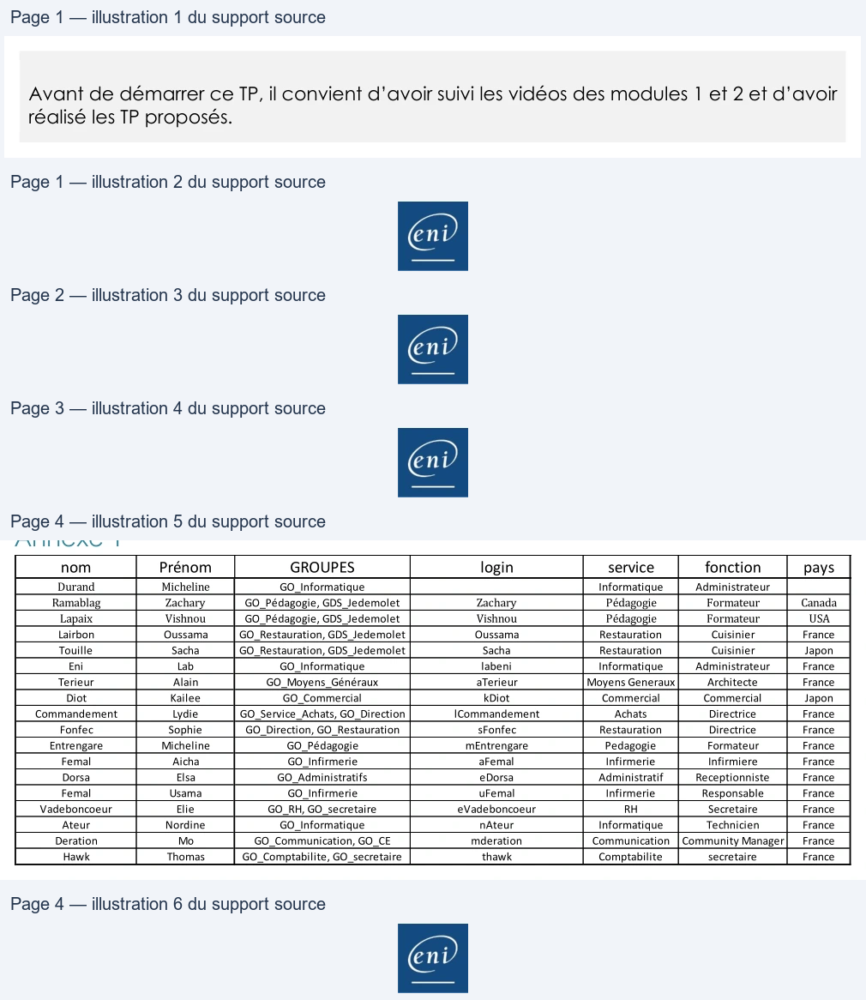

Transcription du document du Drive TSSR. La mise en forme est adaptée au Web ; les compléments IA du portail sont présentés séparément.
Cloud et Microsoft 365
TP 01 du Module 02 – Administration Microsoft 365
Avant de démarrer ce TP, il convient d’avoir suivi les vidéos des modules 1 et 2 et d’avoir
réalisé les TP proposés.
Objectifs
Créer des utilisateurs et des groupes dans Microsoft 365 suivant l’annexe 1
Prérequis
•
Avoir une connexion internet
Principales tâches à réaliser
Créez des utilisateurs Microsoft 365 sans affecter de licence.
•
Créez un utilisateur Zachary Ramablag avec comme nom de connexion Zachary et
comme pays le Canada, fonction Formateur, service Pédagogie.
Notez son mot de passe temporaire.
•
Créez un utilisateur Vishnou Lapaix avec comme nom de connexion Vishnou et comme
pays les USA, fonction Formateur, service Pédagogie.
Notez son mot de passe temporaire.
•
Créez un utilisateur Oussama Lairbon avec comme nom de connexion Oussama et
comme pays la France, fonction Cuisinier, service Restauration.
Notez son mot de passe temporaire.
•
Créez un utilisateur en PowerShell Sacha Touille avec comme nom de connexion Sacha
et comme pays le Japon, fonction Cuisinier, service restauration, comme mot de passe
Pa55w.rd et il doit changer son mot de passe à la prochaine connexion.
New-MsolUser -UserPrincipalName SachaTouille@labeni.ovh -DisplayName SachaTouille -FirstName Sacha -LastName Touille –department restauration –title cuisinier-Password Pa55w.rd -ForceChangePassword $true -UsageLocation jp
•
Connectez-vous avec cet utilisateur.
Que constatez-vous ? Impossible de se connecter sans licence.
Comment pourriez-vous régler ce problème ? Faites-le.
Il faut lui assigner une licence, soit au travers de la console graphique, soit avec PowerShell.
Page 1/4
© ENI – Tous droits réservés
Cloud et Microsoft 365
Pour avoir l'info :
Get-MsolAccountSku
Get-MsolUser
-all
-Department
restauration
-UsageLocation
jp
-
UnlicensedUsersOnly
|
ForEach-Object
{Set-MsolUserLicense
-
UserPrincipalName
$_.userprincipalname
-AddLicenses
"slebouchereni:ENTERPRISEPREMIUM"}
•
Connectez-vous avec cet utilisateur.
Notez son nouveau mot de passe.
•
Créez un utilisateur en PowerShell Lab Eni avec comme nom de connexion labeni et
comme pays la France, fonction Administrateur, service Informatique, comme mot de
passe Pa55w.rd, lui ajouter le rôle administrateur global.
New-MsolUser -UserPrincipalName labeni@labeni.ovh -DisplayName labeni - FirstName lab -LastName eni –department Informatique –title Administrateur -Password Pa55w.rd -UsageLocation fr
Add-MsolRoleMember -RoleName "Company Administrator" - RoleMemberEmailAddress "labeni@labeniXX.ovh"
•
Changez la fonction de Oussama Lairbon en chef cuisinier
Set-MsolUser -UserPrincipalName Oussama@labeni15.ovh -title "Chef Cuisinier"
•
Supprimer Vishnou Lapaix.
•
Vérifiez qu’il est bien dans les utilisateurs supprimés puis restaurez-le.
•
Supprimez Sacha Touille en PowerShell puis restaurez-le en PowerShell.
Remove-MsolUser –UserPrincipalName "Sacha@labeni.ovh"
Restore-MsolUser –UserPrincipalName "Sacha@labeni.ovh"
•
Assignez une licence complète à Oussama Lairbon.
•
Assignez une licence complète en PowerShell à Zachary Ramablag
Set-MsolUserLicense –UserPrincipalName "Zachary@labeni.ovh" – AddLicenses "letenant:ENTERPRISEPREMIUM"
•
En PowerShell assignez une licence à Sacha sans Sway, Power BI, Azure Rights
Management.
(Get-MsolUser -UserPrincipalName Sacha@labeni15.ovh).Licenses.ServiceStatus
SWAY = SWAY, Power BI = BI_AZURE_P2, Azure Managment Right = RMS_S_ENTREPRISE
$LOW = New-MsolLicenseOptions -AccountSkuId "slebouchereni:ENTERPRISEPREMIUM" -disabledplans "SWAY", "BI_AZURE_P2", "RMS_S_ENTERPRISE"
Set-MsolUserlicense -UserPrincipalName Sacha@labeni15.ovh - LicenseOptions $LOW
Page 2/4
© ENI – Tous droits réservés
Cloud et Microsoft 365
•
Assignez une licence à Vishnou Lapaix sans Office Online.
•
Vérifiez en vous connectant à son compte.
•
Réactivez Office Online pour Vishnou Lapaix.
•
Créez les groupes Microsoft 365 GO_Restauration, GO_Commercial, GO_Infirmerie,
GO_Informatique,
GO_RH,
GO_CE,
GO_Pedagogie,
GO_Moyens_Generaux,
GO_Comptabilite,
GO_Commercial,
GO_Communication,
GO_Secretaire,
GO_Service_Achats, GO_Adminstratifs et GO_Direction avec une description pour
chaque groupe.
•
Mettez chaque utilisateur dans son groupe de service et votre compte de tenant dans
le service et le groupe informatique et administrateur comme fonction.
•
Mettez Vishnou Lapaix membre de Pédagogie, Deration Mo dans le groupe CE , Yves
Remord dans le groupe commercial.
•
Créez un groupe de sécurité nommé jedemolet avec comme membres : Zachary
Ramablag, Vishnou Lapaix, Oussama Lairbon, Sacha Touille.
•
Ajoutez le rôle « administrateur de mot de passe » à Vishnou Lapaix.
•
Connectez-vous en tant que Vishnou Lapaix et envoyez un mail au groupe Pédagogie.
Vérifiez que vous le recevez bien.
•
Restez connecté en tant que Vishnou Lapaix et réinitialisez le mot de passe de Zachary
Ramablag.
•
Réinitialisez le mot de passe de Oussama Lairbon en PowerShell.
Set-MsolUserPassword -UserPrincipalName "oussama@laneni.ovh" - NewPassword 'Pa55w.rd123'
•
Ajoutez le rôle « Administrateur de licence » à Oussama Lairbon en PowerShell.
Add-MsolRoleMember -RoleName "Billing Administrator" - RoleMemberEmailAddress "oussama@labeni.ovh"
Page 3/4
© ENI – Tous droits réservés
Cloud et Microsoft 365
Annexe 1
nom
Prénom
GROUPES
login
service
fonction
pays
Durand
Micheline
GO_Informatique
Informatique
Administrateur
Ramablag
Zachary
GO_Pédagogie, GDS_Jedemolet
Zachary
Pédagogie
Formateur
Canada
Lapaix
Vishnou
GO_Pédagogie, GDS_Jedemolet
Vishnou
Pédagogie
Formateur
USA
Lairbon
Oussama
GO_Restauration, GDS_Jedemolet
Oussama
Restauration
Cuisinier
France
Touille
Sacha
GO_Restauration, GDS_Jedemolet
Sacha
Restauration
Cuisinier
Japon
Eni
Lab
GO_Informatique
labeni
Informatique
Administrateur
France
Terieur
Alain
GO_Moyens_Généraux
aTerieur
Moyens Generaux
Architecte
France
Diot
Kailee
GO_Commercial
kDiot
Commercial
Commercial
Japon
Commandement
Lydie
GO_Service_Achats, GO_Direction
lCommandement
Achats
Directrice
France
Fonfec
Sophie
GO_Direction, GO_Restauration
sFonfec
Restauration
Directrice
France
Entrengare
Micheline
GO_Pédagogie
mEntrengare
Pedagogie
Formateur
France
Femal
Aicha
GO_Infirmerie
aFemal
Infirmerie
Infirmiere
France
Dorsa
Elsa
GO_Administratifs
eDorsa
Administratif
Receptionniste
France
Femal
Usama
GO_Infirmerie
uFemal
Infirmerie
Responsable
France
Vadeboncoeur
Elie
GO_RH, GO_secretaire
eVadeboncoeur
RH
Secretaire
France
Ateur
Nordine
GO_Informatique
nAteur
Informatique
Technicien
France
Deration
Mo
GO_Communication, GO_CE
mderation
Communication
Community Manager
France
Hawk
Thomas
GO_Comptabilite, GO_secretaire
thawk
Comptabilite
secretaire
France
Page 4/4
© ENI – Tous droits réservés
| nom Durand Ramablag Lapaix Lairbon Touille Eni Terieur Diot | Prénom Micheline Zachary Vishnou Oussama Sacha Lab Alain Kailee | GROUPES GO Informatique _ GO _Pédagogie, GDS _Jedemolet GO _Pédagogie, GDS _Jedemolet GO _Restauration, GDS _Jedemolet GO _Restauration, GDS _Jedemolet GO Informatique _ GO Moyens Généraux _ _ GO Commercial _ | login Zachary Vishnou Oussama Sacha labeni aTerieur kDiot | service Informatique Pédagogie Pédagogie Restauration Restauration Informatique MoyensGeneraux Commercial | fonction Administrateur Formateur Formateur Cuisinier Cuisinier Administrateur Architecte Commercial | pays Canada USA France Japon France France Japon |
| Commandement | Lydie | GO _Service _Achats, GO _Direction | lCommandement | Achats | Directrice | France |
| Fonfec | Sophie | GO _Direction, GO _Restauration | sFonfec | Restauration | Directrice | France |
| Entrengare Femal Dorsa Femal Vadeboncoeur Ateur Deration Hawk | Micheline Aicha Elsa Usama Elie Nordine Mo Thomas | GO Pédagogie _ GO Infirmerie _ GO Administratifs _ GO Infirmerie _ GO _RH GO _secretaire , GO Informatique _ GO _Communication, GO _CE GO _Comptabilite, GO _secretaire | mEntrengare aFemal eDorsa uFemal eVadeboncoeur nAteur mderation thawk | Pedagogie Infirmerie Administratif Infirmerie RH Informatique Communication Comptabilite | Formateur Infirmiere Receptionniste Responsable Secretaire Technicien CommunityManager secretaire | France France France France France France France France |
